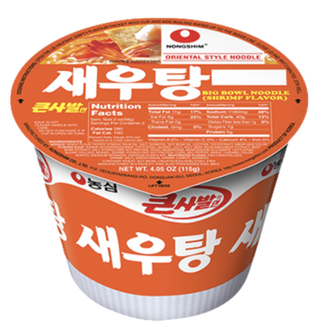
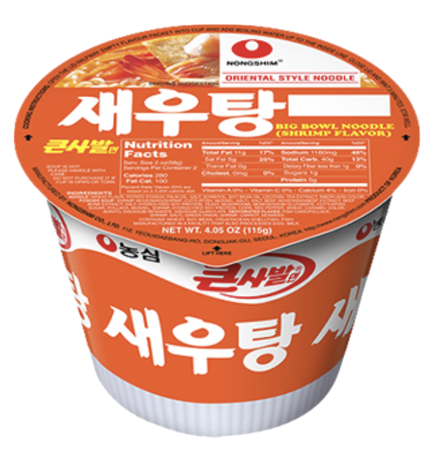

Chal Bibimmyun
Weight: 130g
Year of Release: 2005
Rating: 4/5
Notable flavors: sour bibim sauce; chili powder, sesame oil
This product is inspired by Bibim Guksu (spicy cold noodles). They are spicy for sure, but also great for eating during the summer. Recommended with boiled egg and sliced cucumber.

 
